Sagittal Orientation
Imperative API

Declarative API
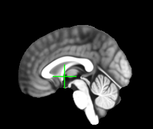
Optimized Shader
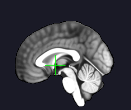
Difference (Imp vs Dec)
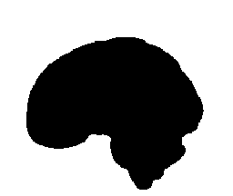
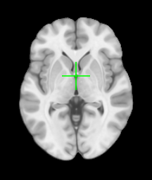
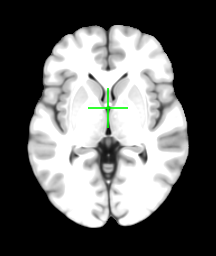
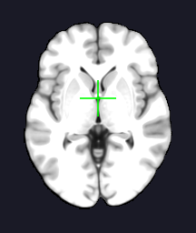
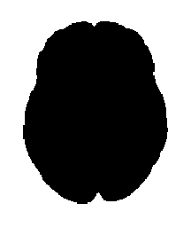



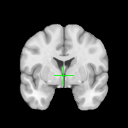
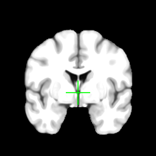
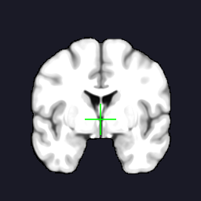
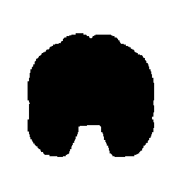
Axial: SSIM = ~0.8862
Sagittal: SSIM = ~0.8862
Coronal: SSIM = ~0.0288
⚠️ Significant differences detected
Axial: SSIM = 1.0000 ✓
Sagittal: SSIM = 1.0000 ✓
Coronal: SSIM = 1.0000 ✓
✅ Perfect match (expected - same shader)